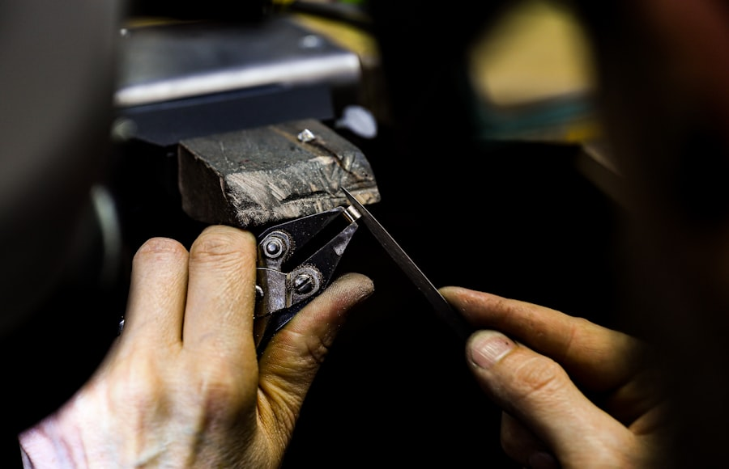
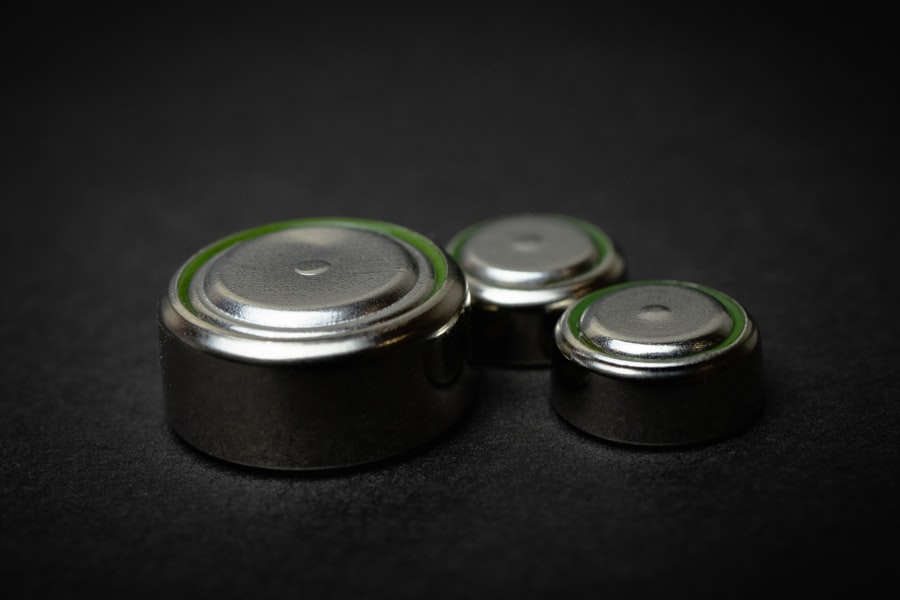
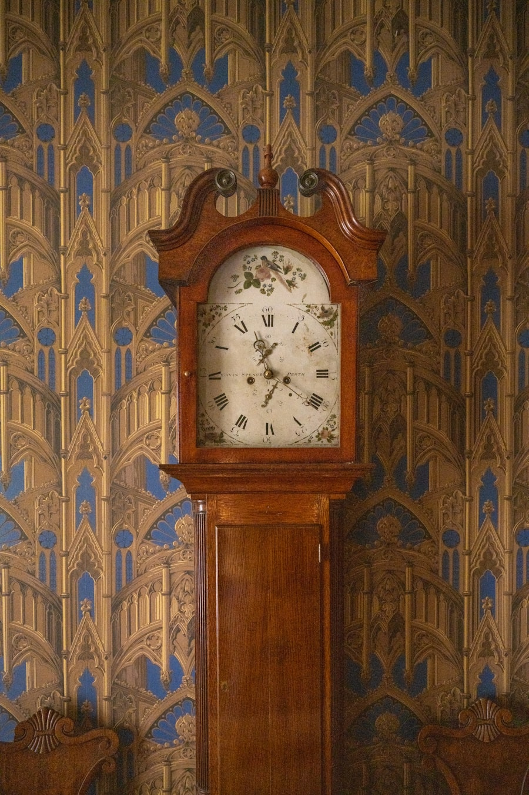
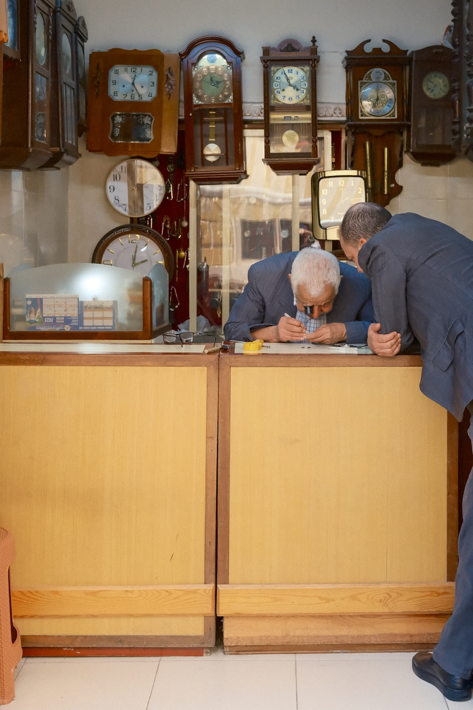
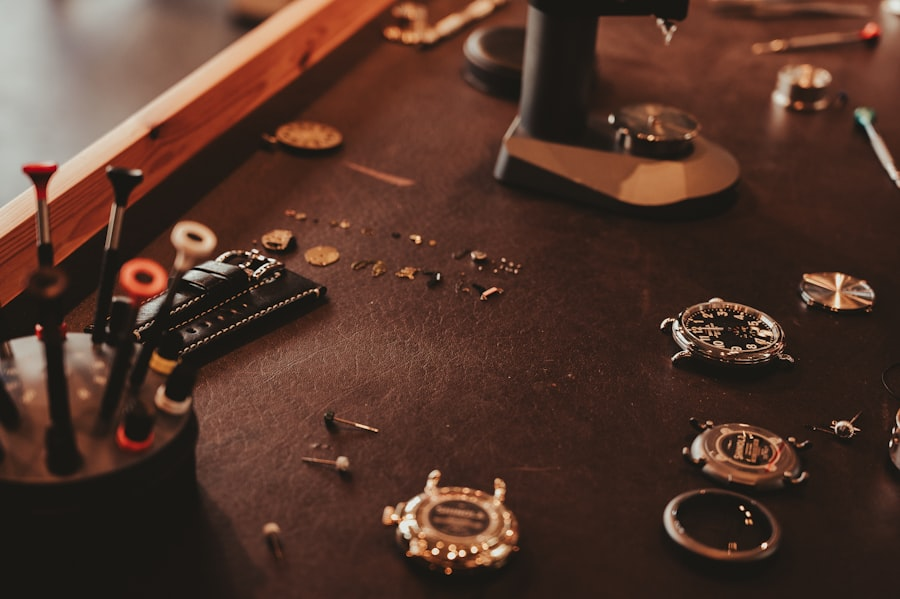

Da manutenção do dia a dia à recuperação de peças de família, cada relógio recebe o mesmo nível de atenção.
O que fazemos
Da manutenção do dia a dia ao reparo de peças de família — conheça cada frente de trabalho da clínica.
Diagnóstico e reparo de calibres de quartzo e mecânicos, automáticos e de corda manual.
Envie seu relógio →
Recuperação do brilho original da caixa e da pulseira, com técnica e acabamento cuidadoso.
Envie seu relógio →Acabamento espelhado nas faces lapidadas, devolvendo a definição original do desenho.
Envie seu relógio →
Substituição rápida de pilha e bateria, com teste de funcionamento antes da entrega.
Envie seu relógio →
Conserto de relógios de parede, coluna e pedestal — mecânicos, de corda ou quartzo.
Envie seu relógio →
Compramos e vendemos relógios com procedência e garantia, com ou sem caixa e certificado.
Venda seu relógio →
Análise técnica sem compromisso, com orçamento claro antes de qualquer reparo.
Peça uma avaliação →Fotos ilustrativas: Unsplash